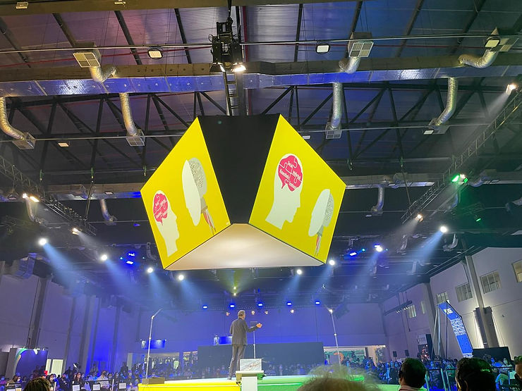
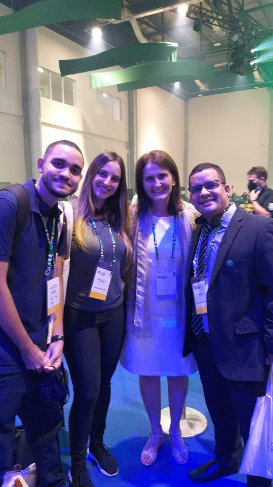
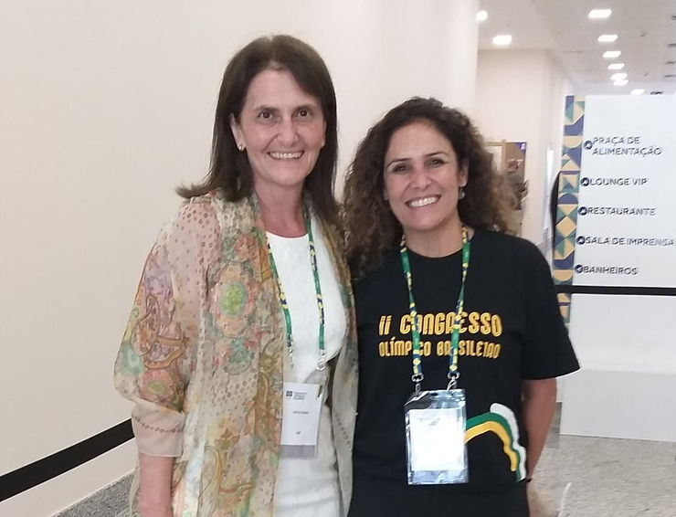

O COB realizou seu II Congresso Olímpico em Salvador, Bahia, entre os dias 19 e 20 de março de 2022, sob o tema Planejamento, um referencial de futuro para o Esporte Olímpico. Para o Comitê Olímpico Brasileiro, é a marca do início de um novo ciclo. Palestrantes nacionais e internacionais mostraram a perspectiva do atual cenário mundial, que apresenta mudanças rápidas e grandes incertezas.

A Abrapesp esteve presente através de seus associados: Rodrigo Damasceno, que além de atuar como psicólogo, está na área de gestão, como presidente da Federação Piauiense de Wrestling; a psicóloga do esporte Manoella Fiochi, do SESI SP, que trabalha com basquete e triathlon; Daniel Barretto, estudante de Psicologia da Escola Bahiana de Medicina e Saúde Pública; e Katia Rubio, ex-presidente e fundadora da Associação, atualmente membro do comitê de relacionamento externo da entidade, professora associada da Faculdade de Educação da USP.
Nossa equipe de comunicação conversou com os participantes…
Equipe Comunicação – Manoella, quais foram suas impressões sobre o evento e o tema escolhido?
Manoella Fiochi – Participar do II Congresso Olímpico Brasileiro foi uma grande oportunidade de estar em um evento amplo e estratégico, que conectou os principais agentes esportivos do alto rendimento, inclusive atletas. O tema dessa edição convidou a refletir sobre o que foi feito até aqui e como seguir adiante, com palestras e debates sobre questões fundamentais como a saúde mental no esporte; atleta mulher; prevenção de abuso e assédio; políticas antirracistas e antidoping; entre outros. Em relação à Psicologia do Esporte, por eu ter participado das duas edições do congresso, notei a presença maior da área no evento, de forma mais sólida e adequada. Isso nos fortalece enquanto profissão, mas também convoca a estar cada vez mais eticamente presentes nesses espaços.
Equipe Comunicação – Kátia, qual a importância da ABRAPESP estar presente nesse evento?
Kátia Rúbio – Estamos aqui apontando a consolidação da PE no Brasil.
Equipe Comunicação – Rodrigo Damasceno, qual a importância do congresso para o esporte brasileiro?
Rodrigo Damasceno – De grande relevância para a comunidade esportiva brasileira. Uma oportunidade que reuniu os principais representantes das entidades esportivas dos esportes olímpicos brasileiro, e proporcionou um grande network entre os órgãos que representam e atuam nas áreas voltadas ao contexto esportivo, com foco eixos direcionados à área de treinamento esportivo, gestão esportiva e ciências do esporte.
O evento proporcionou aos participantes reencontrar colegas distantes, há mais de dois anos. Foi o caso das duas ex-presidentes da Abrapesp Kátia Rubio e Alessandra Dutra, psicóloga do Comitê Olímpico Brasileiro.

O II Congresso, realizado pelo COB e com direção técnica do Instituto Olímpico Brasileiro (IOB), departamento de educação do COB para o esporte olímpico, apresentou como grande novidade, o Prêmio Esporte Inovação, que escolheu os melhores projetos de gestão e inovação que apresentaram soluções concretas para os desafios enfrentados no esporte nacional. Os finalistas premiados, foram:
Em primeiro lugar, “Sistema Isports para Talentos Esportivos – Modalidade Judô”, de Caroline Godoy, Anderson Ara, Francisco Louzada Neto, Leandro Carlos Mazzei, Marcus Agostinho, e José Olívio Júnior. O projeto foi apresentado para todos os participantes e premiado com R$15 mil e um dos autores também terá a oportunidade de viver a experiência dos Jogos Olímpicos Paris 2024.
O segundo lugar ficou com o projeto “Medidor de Velocidade de Pedestres: Descobrindo Talentos Para o Esporte”, de Fabiano Peçanha, Juliano Peçanha, Jaqueline Beatriz Weber e Luciano Peçanha. E o terceiro trabalho foi o “Ciclismo Virtual Brasileiro – Competições Virtuais em Percursos Reais”, de Schubert Abreu, Daniel Pawel e Rodrigo Rosa. Eles ganharam um dia de vivência no COB e no Centro de Treinamento do Time Brasil, além do valor de R$10 mil e R$5 mil, respectivamente.